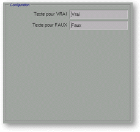

<!-- Documentation XQuad (c)1995-2000 AXENE contact axene@axene.org>
<html>

<head>
<title>Numeric Format: Units, Texts and Styles</title>
</head>

<body BGCOLOR="#FFFFFF" BACKGROUND="Images/back.gif" TEXT="#000000">
<a NAME="box_numfmt_unitstyletext">

<p ALIGN="right">  </p>

<p align="center"><br>
</a><a NAME="bnf_unit"></p>

<h2 align="center">Format unit configuration</h2>
</a>

<p>When the format type is either &quot;<i>Units</i>&quot;, &quot;<i>Scientific</i>&quot;
or &quot;<i>Fractions</i>&quot; and you select the &quot;<i>Units</i>&quot; button in the
horizontal bar (upper right portion of the 'Numeric Format' dialog box), the &quot;<i>Configuration</i>&quot;
section looks like this:</p>

<p align="center"> <br>
<small><i>Screen snap: &quot;Configuration&quot; section</i></small></p>

<p>This section is composed, from top to bottom, by: 

<ul>
  <li><a NAME="button_unit">The &quot;<i>Put the unit after the number</i>&quot; button <b>selects
    the position of the unit symbol</b>. If the button is activated, the unit symbol is
    displayed after the number (ex.: <tt>'354 F'</tt>); while if the button is not activated,
    the unit symbol is displayed before the number (ex.: <tt>'$354'</tt>).</a><br>
    &nbsp;</li>
  <li><a NAME="textfield_unit">The &quot;<i>Number unit</i>&quot; text field <b>selects the
    unit symbol</b>. The symbol can have up to 30 characters.</a></li>
</ul>

<p><br>
<br>
</p>

<hr>

<p><br>
</p>
<a NAME="bnf_text">

<h2 align="center">Format text configuration</a></h2>

<p>When the format type is &quot;<i>Boolean</i>&quot; and you select the &quot;<i>Text</i>&quot;
button in the horizontal bar (upper right portion of the 'Numeric Format' dialog box), the
&quot;<i>Configuration</i>&quot; section looks like this:</p>

<p align="center"> <br>
<small><i>Screen snap: &quot;Configuration&quot; section</i></small></p>

<p>This section is composed, from top to bottom, by: 

<ul>
  <li><a NAME="textfield_true">The &quot;<i>Text for TRUE</i>&quot; text field <b>selects the
    displayed text for the value TRUE</b>. Any non-null value is TRUE, thus the content of
    this text field is displayed.</a><br>
    &nbsp;</li>
  <li><a NAME="textfield_false">The &quot;<i>Text for FALSE</i>&quot; text field <b>selects
    the displayed text for the value FALSE</b>. A null value is FALSE, thus the content of
    this text field is displayed.</a></li>
</ul>

<p><br>
<br>
</p>

<hr>

<p><br>
</p>
<a NAME="bnf_style">

<h2 align="center">Format style configuration</a></h2>

<p>When the format type is either &quot;<i>Day of the week</i>&quot; or &quot;<i>Month of
the year</i>&quot; and you select the &quot;<i>Style</i>&quot; button in the horizontal
bar (upper right portion of the 'Numeric Format' dialog box), the &quot;<i>Configuration</i>&quot;
section looks like this:</p>

<p align="center"> <br>
<small><i>Screen snap: &quot;Configuration&quot; section</i></small></p>

<p>This section is composed, from top to bottom, by: 

<ul>
  <li><a NAME="button_very_short">The &quot;<i>Very Short Format</i>&quot; button <b>selects a
    very short form of the name</b>. The name of the weekday or of the month is displayed with
    one or two letters (there are sometimes two letters to avoid possible mistakes).</a><br>
    &nbsp;</li>
  <li><a NAME="button_short">The &quot;<i>Short Format</i>&quot; button <b>selects a short
    form of the name</b>. The name of the weekday or of the month is displayed with three
    letters.</a><br>
    &nbsp;</li>
  <li><a NAME="button_long">The &quot;<i>Long Format</i>&quot; button <b>selects a long form
    of the name</b>. The name of the weekday or of the month is displayed entirely.</a></li>
</ul>

<p><br>
</p>

<hr>

<p ALIGN="right"></p>
</body>
</html>
